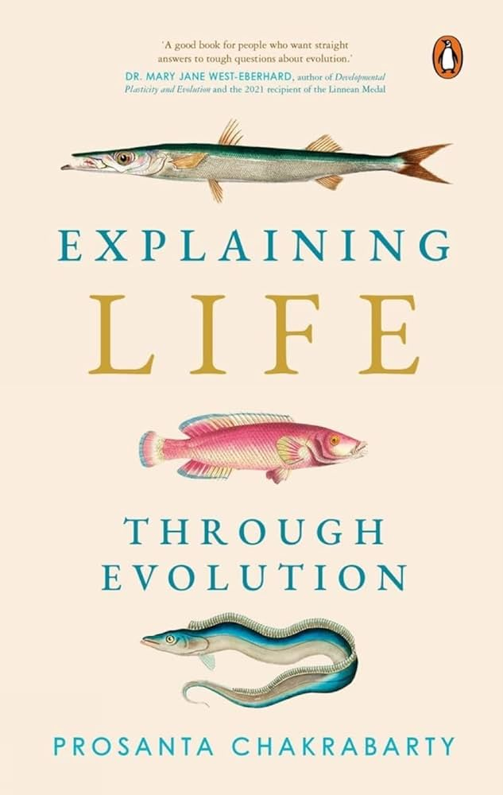
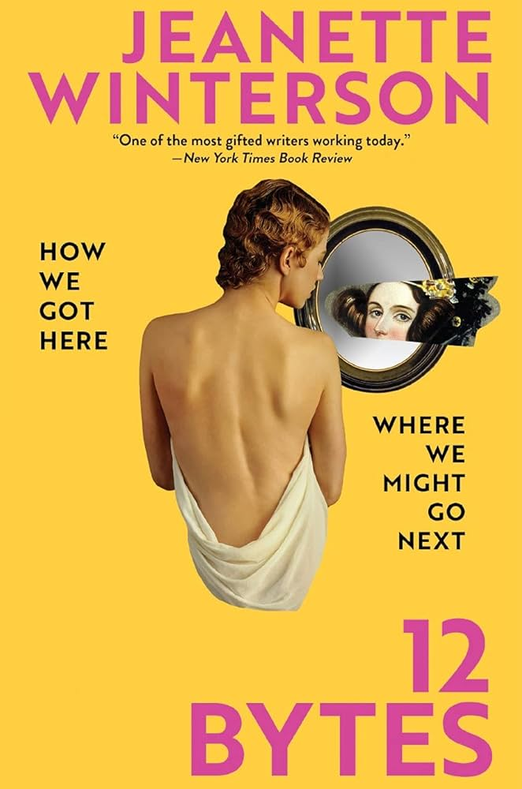
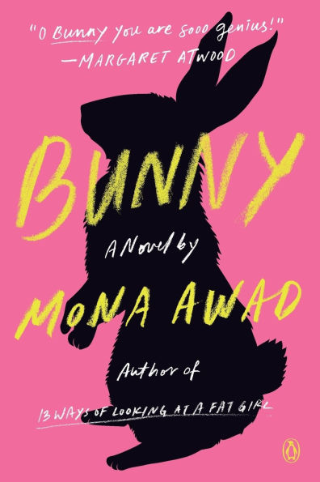
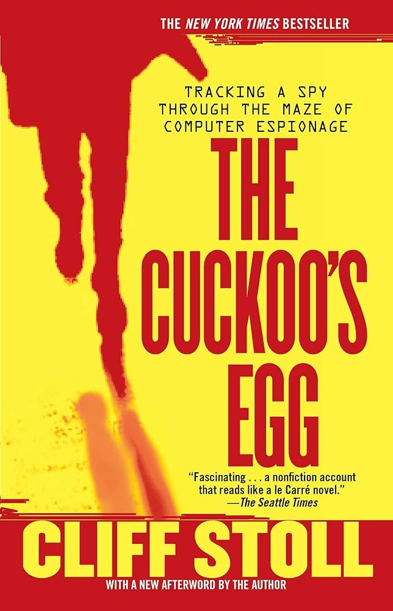
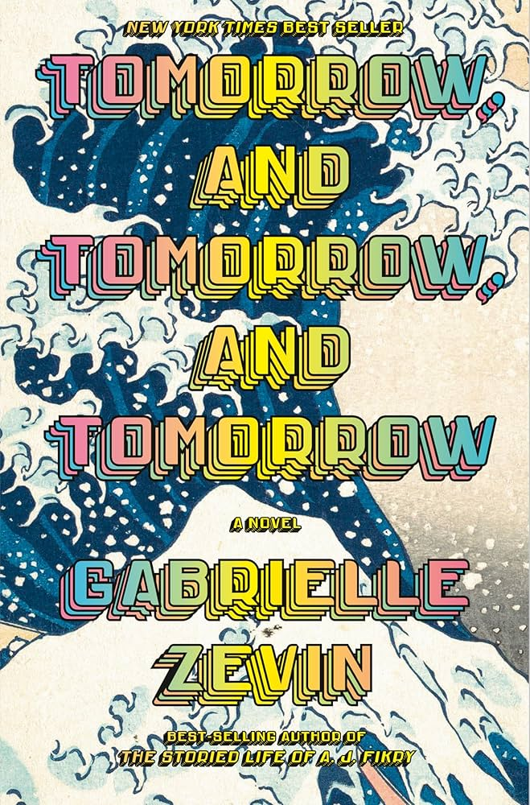

T-Day
Book Log of 2025
For New Years, I told myself that I would start reading again. So far, I have read all of the following books. I try to read at least 10 pages a day, and I try to stick to non-fiction. It has been going well so far! My favorite genre is scientific non-fiction, but there are two fiction books on this list.
Explaning Life through Evoltion, Prosanta Chakrabarty
But who knows, if we blurred the line between us and the rest of the animal kingdom, maybe we would see ourselves for what we are—just another recently evolved branch of the Tree of Life.
I’m in the middle of this book right now. It’s entertaining and interesting while also being pretty strictly scientific, and a little socialogical. I picked it up because I liked the fish on the cover.


12 Bytes, Jeanette Winterson
...the first person to live to 1,000 years old is already born.
This was a crazy read regarding the author’s prospective vision of AGI (Artificial General Intelligence). I was most interested in the idea of bio-agumentation as a means to extend human life using AI technology. 3D printing custom organs from stem cells? I had no idea that was happening. Winterson also disects the history of computers, primarily related to role of women. My biggest takeaway is that we must digest the past and present before allowing AI to live amongst, and even superscede us.
Bunny, Mona Awad
Our mothers always said to look hard at the things of this world that are owies on the eyes because they will put more colors in your inner rainbow.
This one was weird. It’s a classic example of how you can so easily write off fantastical and unexplainable stories with ’she was schizophrenic the whole time’. Personally, I choose to believe that this is still a fantasy thriller, and all of that really happened. It was a great story and it would be a wasted narrative to pretend like the main characters didn’t actually experience any of it.


The Cuckoo’s Egg, Cliff Stoll
By analyzing public data with the help of computers, people can uncover secrets without ever seeing a classified database.
The author promised a thrilling story, and I was totally hooked during the fist few chapters. Instead, all of the exciting parts were wrapped up in an underwhelming summary for the final chapter. Meanwhile, for 300 pages, I re-read the same cat and mouse story of Stoll tracking a hacker at his desk, while never getting a search warrant. Over and over again. By the time the police do catch the guy, it’s classified information and no one gets to know the secret identity of the hacker anyway.
Tomorrow and Tomorrow and Tomorrow, Gabrielle Zevin
He loved the intimacy of being in a tight group of people who had come together, miraculously, for a brief period in time, for the purpose of making art.
This is literally my favorite book of all time. It is fiction, but the characters and the story feel so real. I am so attached to some of these characters and I have felt so many of these feelings. I read this book for the first time in 2023, and it was a huge influence for my studies in game design and creative arts. It taught me how to love platonically, and how to make games with my best friend even when we had minimal resources or a belief in ourselves.


I’m Glad My Mom Died, Jennette McCurdy
I'm allowed to hate someone else's dream, even if it's my reality.
Honestly, you can skip this book if you have any history of disordered eating. Otherwise, the rest of the memoir was well written, and sometimes difficult to get through because of how deep and personal it all was. I’m glad to know that McCurdy has been able to reflect on these issues and share her story.